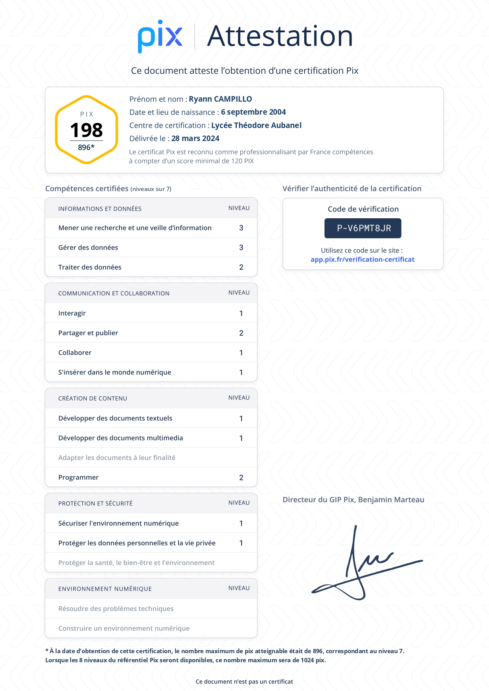

Mon Parcours
Je m'appelle Campillo Ryann, j'ai 19 ans, et je suis étudiant en 2ème année de BTS SIO SLAM.
Depuis mon enfance, ma passion pour l'informatique ne cessait de grandir. J'ai passé de nombreux moments à explorer le fonctionnement des ordinateurs, à aider mes parents dans diverses tâches techniques, et c'est lors de mon stage de troisième
chez Emergency Informatique au Pontet que j'ai réellement plongé dans cet univers. Ce stage m'a permis d'observer de près le métier de technicien informatique, où j'ai eu l'opportunité d'installer Windows, de configurer des imprimantes et
bien plus encore. Cet apprentissage pratique a renforcé mon intérêt pour l'informatique.
Parallèlement, j 'ai été attiré par le domaine du développement informatique. En seconde, alors que je devais choisir entre des études longues
ou courtes, j'ai pris conscience de l 'importance de choisir une voie qui me permettrait de m'épanouir pleinement. C 'est ainsi que j'ai opté pour la voie technologique " STI2D ", offrant des perspectives d 'études variées. En première, j'ai choisi
l 'option SIN (Systèmes d'Information et Numérique) pour me spécialiser dans le développement. Nous avons réalisé de nombreux projets, notamment avec des cartes Arduino, comme la création d 'un système de changement automatique de couleur avec
une lampe RGB en langage C++. En terminale, j'ai exprimé mon souhait de poursuivre dans le domaine du développement web, ce qui m 'a conduit à choisir le BTS SIO (Services Informatiques aux Organisations).
Ce parcours représente pour moi une opportunité de concrétiser ma passion pour l'informatique et de me préparer à une carrière professionnelle dans ce domaine dynamique et en constante évolution.
Mes compétences
Voici les compétences que j'ai pu acquérir. Elles ont été acquises à la fois durant la formation en BTS SIO mais aussi chez moi en autodidacte et durant les stages de première et seconde années.
Mes Certifications
Voici les certifications que j'ai passé et celles que j'aimerai passé plus tard afin de toujours évolué dans le domaine de l 'informatique

{kind=link}